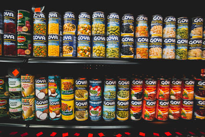
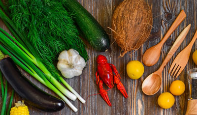
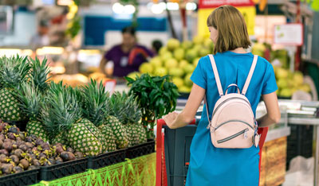

What's in your pantry?
Track your food.
Keep track of your pantry inventory.

- Add your items from your grocery trips.
- Automatically deduct items used in your menu.
- Receive low-stock alerts.
Digitalize your cookbook.
Centralize all your favorite recipes

- Upload your favorite recipes.
- Use these recipes to auto-create menu plans
- Explore new recipes
Easy Menu Planning & Shopping.
Automated Planning & Shopping Lists

- Uses your on-hand ingredients to create budget-friendly shopping lists
- Generate shopping list based on menu plan